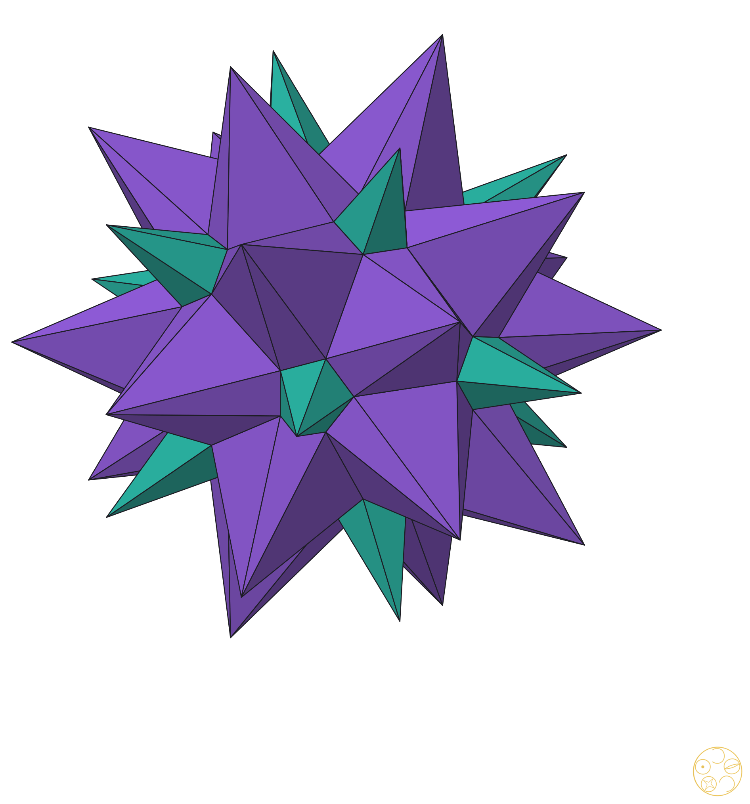
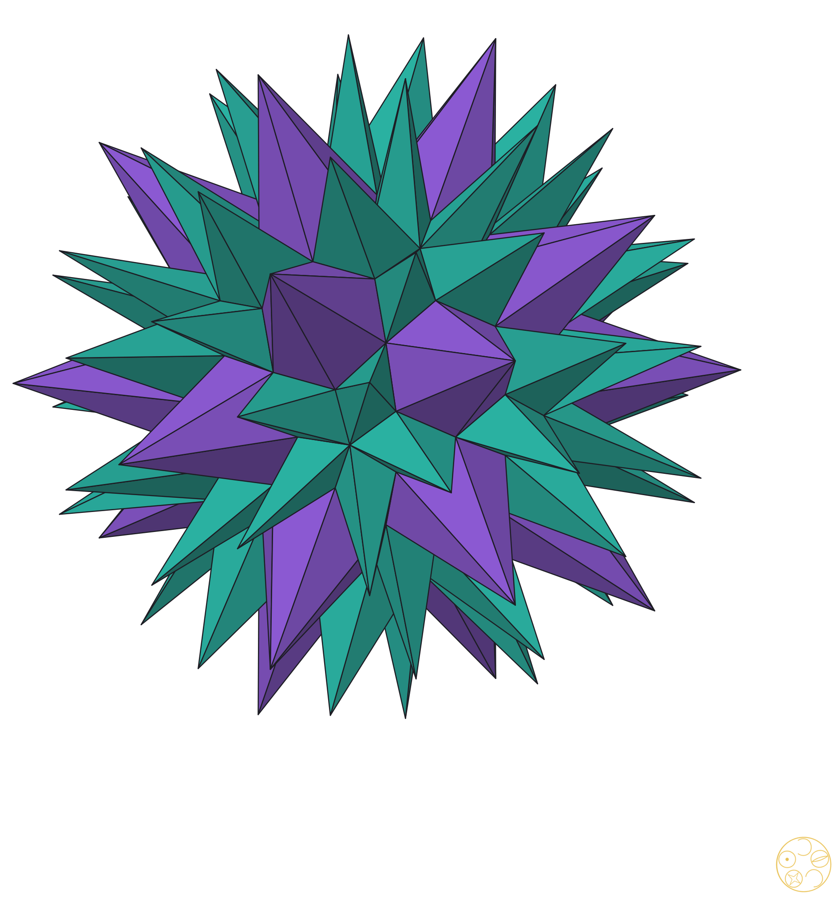
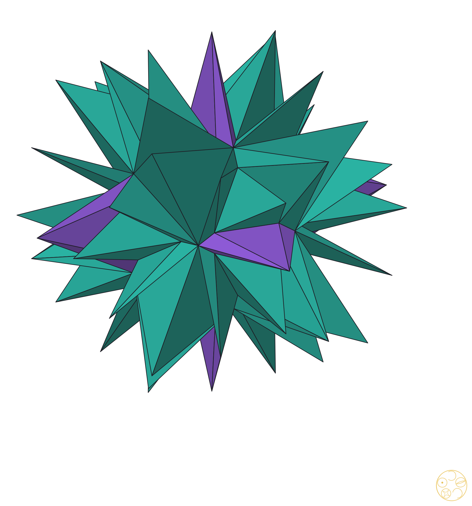
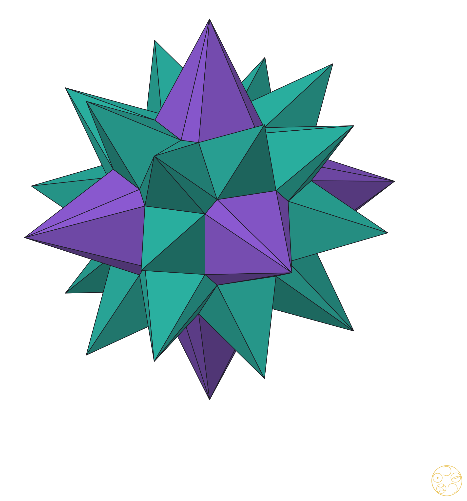
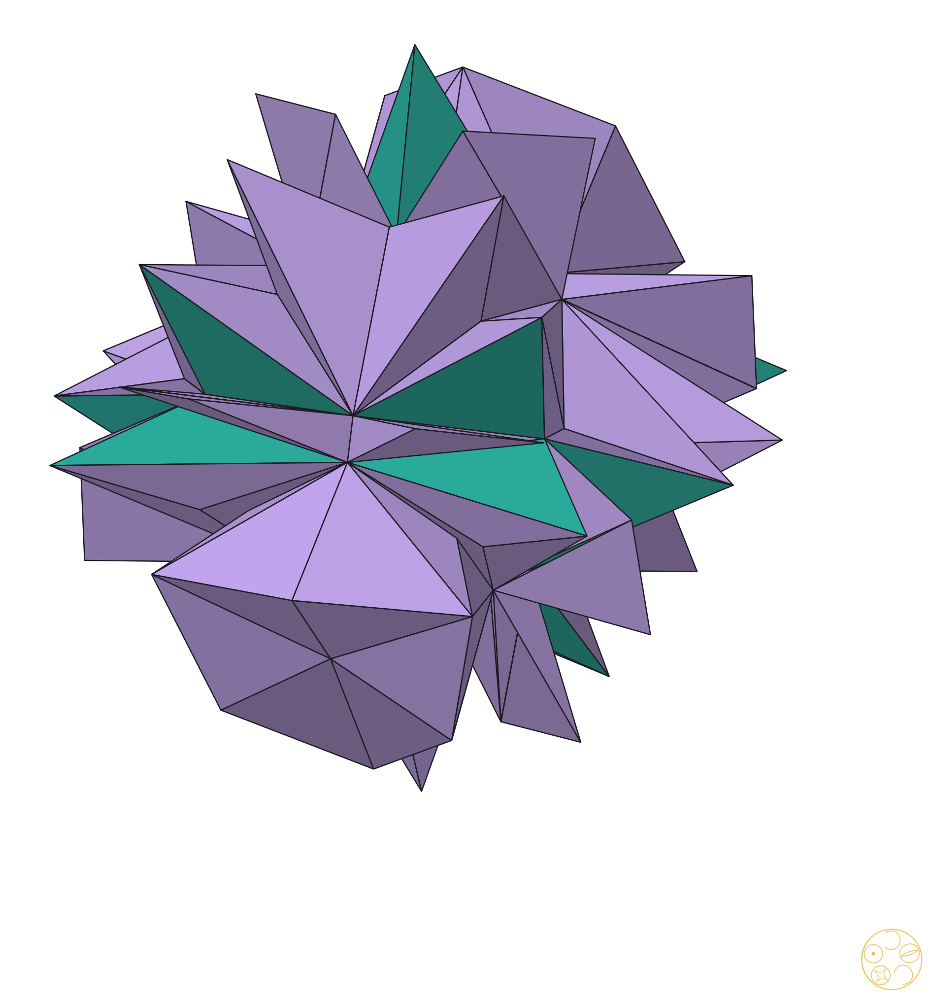
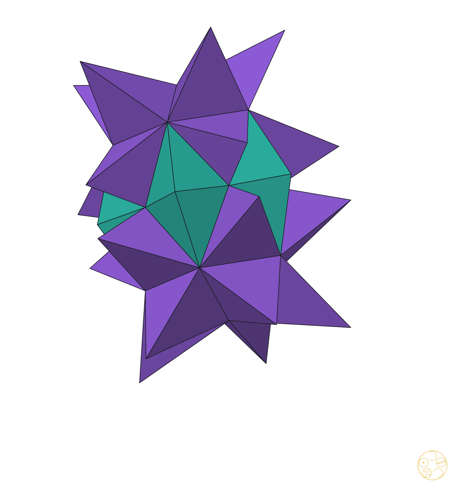

Six stars, drawn large

DICTO GTI, the golden truncated icosahedron (D40, #38) · tips at the poles of the face planes, ρ² = φR² · Chapters 2 to 4

DICTO Ogdoecontahedron, OG (D28, #31) · ρ² = φR² · Chapters 2 and 4

DICTO OCD Stella (D29) · pyritohedral symmetry Th · ρ² = φR² · Chapters 2 and 3

Golden Clasp (D107), named by DICTO on 31 October 2026 · octahedral symmetry Oh · ρ² = φR²

DICTO Lahdeli (D77, #56) · DICTO's valley rule, t = 2, steps one to three · Chapters 2 and 5

Kagemusha (D86, #62) with DICTO's notch piece Kuwagata · t = 2, after step one · Chapter 5